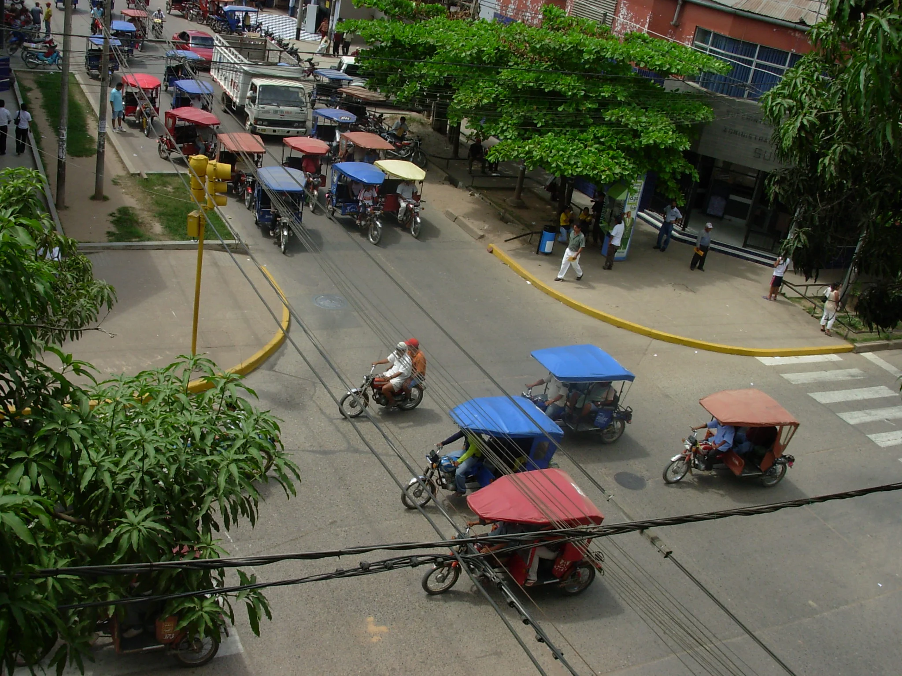

Probar monitoreo
Probar monitoreo

Detección de vehículos
Reconocimiento de automóviles, motocicletas, camiones y otras categorías mediante inteligencia artificial.
SmartCity AI es un proyecto que busca analizar videos del tránsito, detectar vehículos, identificar posibles infracciones y visualizar estadísticas de las calles de Pucallpa.

Reconocimiento de automóviles, motocicletas, camiones y otras categorías mediante inteligencia artificial.

Análisis de posibles infracciones de tránsito mediante inteligencia artificial, incluyendo cruces con luz roja simulada y ocupación del paso peatonal.
Ver infracciones
Visualización de conteos y resultados por tipo de vehículo.
Consulta de los resultados registrados en cada análisis.
Proyecto académico desarrollado para explorar cómo la inteligencia artificial puede apoyar el análisis del tránsito vehicular de Pucallpa.
Ingeniería de Software · SENATI